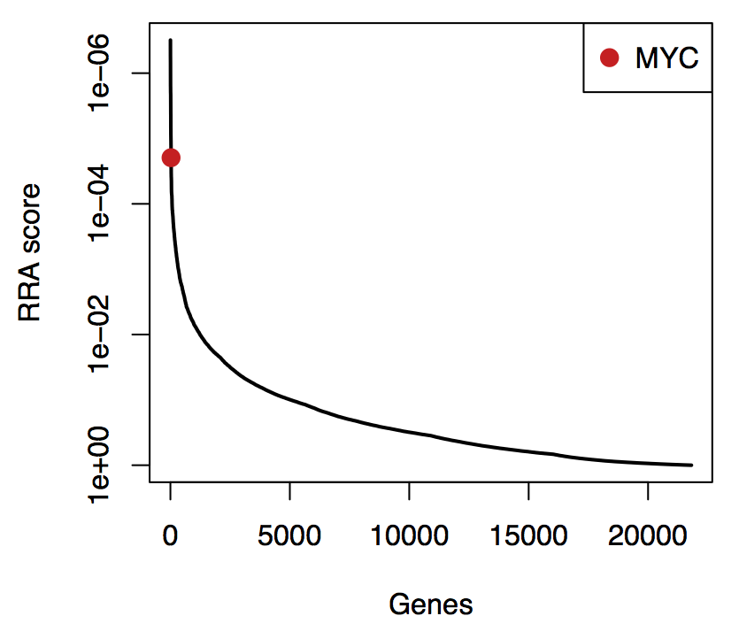
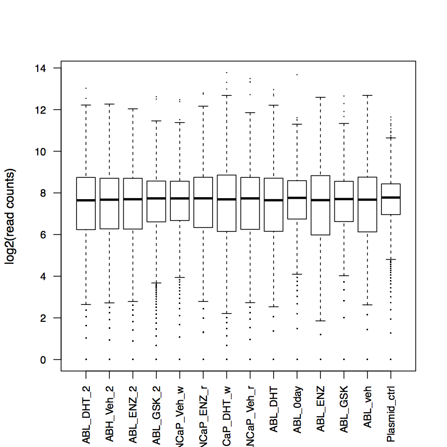

Home Edit
Model-based Analysis of Genome-wide CRISPR-Cas9 Knockout (MAGeCK) is a computational tool to identify important genes from the recent genome-scale CRISPR-Cas9 knockout screens (or GeCKO) technology. MAGeCK is developed and maintained by Wei Li and Han Xu from Dr. Xiaole Shirley Liu's lab at Department of Biostatistics and Computational Biology, Dana-Farber Cancer Institute and Harvard School of Public Health. The MAGeCK algorithm is described in the following paper:
MAGeCK is a free, open source software under the BSD license.
Besides MAGeCK, we also present MAGeCK-VISPR, a comprehensive quality control, analysis and visualization workflow for CRISPR/Cas9 screens. MAGeCK-VISPR allows you to check the qualities of the screening sample, perform multiple condition comparisons (instead of only two condition comparisons in MAGeCK), and explore the results interactively.
Any questions about MAGeCK or MAGeCK-VISPR? Check the FAQ below or join our MAGeCK Google group.
This documentation includes the following items:
- Installation
- Version history
- Tutorial
- Usage
- Visualization
- File formats (input)
- File formats (output)
- Commonly used libraries
- Frequently Asked Questions
Take a look at the following videos to install and use MAGeCK:
- Installation
- Comparison between samples
Installation
Download and get the unzip password
The latest version of MAGeCK (0.5.1) can be downloaded here:
The zip file is encrypted, but you can get the password easily by one of the following options:
- Join our MAGeCK Google group and the password is shown on the top of the forum; or
- Send an email to mageck.help@gmail.com with the subject "password", and you will get an automatic reply with password within 1 minute.
You need to go to the Terminal to unzip and install the software. See the instructions for Installation below.
System requirement
MAGeCK can be run on either Mac or Linux system. Since MAGeCK is written in Python and C, Python 2.7 (>2.7) and a C compiler is needed.
Optional dependencies
Two optional softwares include R and pdflatex. MAGeCK relies on both softwares to generating PDF reports if the --pdf-report option is used. If it is not possible to install them, you can also generate PDF reports by copying some MAGeCK output files to another computers with R and pdflatex are properly installed. See Q and A for more information.
If you use the --pdf-report option, xtable is required, and gplots is suggested to install in R. Use install.packages("xtable") and install.packages("gplots") in R to install them.
You won't get any error messages if you don't have gplots, but you will get a more beautiful clustering figure in the pdf report of the count command.
MAGeCK also suggests users installing numpy to calculate the negative binomial p value. However, in cases where numpy is not found, MAGeCK will use the normal p value instead. There may be slight differences between both methods.
What if I cannot install these R packages in my machine
You can run MAGeCK without --pdf-report option, and copy some files to another machine with these R packages to generate pdf report. See Q and A for more details.
Installation
Since version 0.3, MAGeCK uses standard Python installation procedures (distutils) for compiling and installation of the software.
The installation procedure is extremely easy. First, download the source code, unzip it (assuming the current version is 0.4.1), type the unzip password, and go into the directory:
unzip mageck-0.4.1.zip cd mageck-0.4
After that, invoke python setup.py:
python setup.py install
And it is done! If you want MAGeCK to be installed on your own directory , use the following command instead:
python setup.py install --user
This is the easiest way to install mageck. An alternative approach is (you may have one additional step to set up the environment variables; see below)
python setup.py install --prefix=$HOME
where $HOME is the root directory you want to install (usually the user home).
Manual installation
The manual installation is deprecated since version 0.3. Please refer to the installation instructions above.
After downloading the source code, follow the instructions below for manual installation.
Setting up the environment variables
In most systems you don't need to set up the environment variables. Just type "mageck" in the command line to see if the mageck program works.
For those who installed MAGeCK into custom directories, there may be additional steps, including changing the environment variable. First you need to add the path of the mageck program to your PATH variable. For example, if you used the --prefix=$HOME option during installation, then set up the PATH variable by typing:
export PATH=$PATH:$HOME/bin
You also need to add the path of the MAGeCK module to the PYTHONPATH variable. Again, his variable should be set as
export PYTHONPATH=$HOME/lib/python2.7/site-packages:$PYTHONPATH
To save the path configuration (so you don't have to type it every time), place the above command in your ~/.bashrc (for Linux) or ~/.bash_profile (for Mac).
Experimental version
The experimental version of MAGeCK is available at bitbucket. Note that the source codes on BitBucket are experimental and are not fully tested, and it may not be stable or function well. It is strongly recommended to use the MAGeCK software downloaded from sourceforge.
Return to [Home]
Version history
0.5.1
2015.06.23 Version 0.5.1
- Add one real dataset workflow in the documentation
- MAGeCK can now run on python 3 (still experimental)
- FDR calculation method can be specified on both sgRNA and gene level
- The column header of the output has changed to a more human readable form
- Add several more statistics to read count summary
0.5
2015.04.26 Version 0.5
- Add multiple visualization functions (still experimental).
- Fix a bug in negative binomial calculation (thanks to Ido Tamir).
0.4.4
2015.03.19 Version 0.4.4
- Improve the running speed of the RRA program.
- For gene testing, MAGeCK now accepts multiple -t and -c pairs, allowing generating one summary table containing results of multiple comparisons.
- Modify the format of gene_summary.txt; the duplicated "item" column is now removed for positive selection results. Also, two more columns are added to better help users identify true hits: "lo": the RRA lo values; "goodsgrna": the number of sgRNAs in this gene whose ranking is higher than the alpha threshold.
- MAGeCK now allows users specifying a set of control sgRNAs to generate null distributions.
- Fix two bugs in calculating the median factor during normalization (thanks to Bastiaan Evers).
- Add the "-v/--version" command.
0.4.3
2015.02.12 Version 0.4.3
- Fix a bug where the program exits unexpectedly for certain samples with many 0 read counts.
- Fix a bug of pathway analysis where the RRA program stops early for certain gene belonging to too many pathways.
0.4.2
2015.02.04 Version 0.4.2
- Create youtube tutorial videos for installation and sample comparisons.
- Improve the median normalization method to handle cases with many zero-count sgRNAs.
- The median normalized read count are provided in the count command.
- Modify the count command line options to accept combining reads from technical replicates.
- Provide simple statistics for processing fastq files.
- Provide library file for Synergistic Activation Mediators (SAM), a CRISPR activation protocol developed in Feng Zhang laboratory (http://www.addgene.org/crispr/libraries/sam/).
0.4.1
2014.12.01 Version 0.4.1
- Increase the default alpha cutoff from 0.05 to 0.25.
- Provide some of the commonly used library files for the convenience of users.
0.4
2014.11.13 Version 0.4
- Added the BSD license information.
- Improved the logging system.
- The control_id and treatment_id options now can be specified using sample strings.
- Merge positive selection and negative selection genes and pathways into one file.
- Add the --keep-tmp option to control intermediate files after running.
- Fixed one bug in FDR calculation.
0.3
2014.07.01 Version 0.3
- The installation method is changed so users can now more easily install the software.
- Added a new feature to detect enriched pathways (pathway command)
- Changed the input format of the program:
- The second column of the count table (generated by the count subcommand and used by the test subcommand) is now the gene name.
- For the count subcommand, the sgRNA information is provided with the library file.
0.2
2014.04.17 Version 0.2
- Updated the demo and wiki page
0.1
2014.04.04 Version 0.1
- The source code released.
Tutorial
Running MAGeCK is extremely easy and convenient. The demo folder contains two mini examples to go through all steps in MAGeCK. Simply execute the sh script in the command line in each example to run the demos. To see how you can enable visualization functions of MAGeCK in both demos, see the visualization manual.
Also check out the following videos in YouTube to learn how to install and run MAGeCK:
Tutorial 2: Comparison between samples
The first demo: starting from read count tables
There is only one command line in the demo:
mageck test -k sample.txt -t HL60.final,KBM7.final -c HL60.initial,KBM7.initial -n demo
The parameters are explained as follows.
| Parameters | Meaning |
|---|---|
| mageck | The main portal of the MAGeCK program |
| test | A sub-command to ask MAGeCK to perform sgRNA and gene ranking based on provided read count tables |
| -k sgrna_count.txt | The provided read count table file. The format of the file is specified here. |
| -t HL60.final,KBM7.final | The treatment samples are defined as HL60.final,KBM7.final (or the 2nd and 3rd sample, starting from 0) in sgrna_count.txt. See input files for a detailed explanation. |
| -c HL60.initial,KBM7.initial | The control samples are defined as HL60.initial,KBM7.initial (or the 0th and 1st sample, starting from 0) in sgrna_count.txt. See input files for a detailed explanation. |
| -n demo | The prefix of the output files is demo, so you will expect the output files are: demo.sgrna_summary.txt, demo.gene_summary.txt, etc. |
An explanation of the output files can be found in the [output] page. For all available parameters, see the [usage] page.
You can also specify the treatment and control samples using sample index. For example,
mageck test -k sgrna_count.txt -t 2,3 -c 0,1 -n demo
The second demo: starting from raw fastq files
This demo shows an mini example of how to go through the whole pipeline from raw fastq files. In this example, we have fastq files from two conditions, and we would like to compare which gene and sgRNA is significant between conditions. The command line used in the runmageck.sh script is:
mageck run -l library.txt -n demo --sample-label L1,CTRL -t CTRL -c L1 --fastq test1.fastq test2.fastq
The parameters are explained as follows.
| Parameters | Meaning |
|---|---|
| mageck | The main portal of the MAGeCK program |
| run | A sub-command to ask MAGeCK to go through sgRNA counting, sgRNA and gene ranking from fastq files. |
| -l library.txt | The provided sgRNA information, including the sgRNA id, the sequence, and the gene it is targeting. See input files for a detailed explanation. |
| -n demo | The prefix of the output files is demo, so you will expect the output files are: demo.summary.txt, demo.gene.high.txt, etc. |
| --sample-label L1,CTRL | The labels of the two samples are L1 (test1.fastq) and CTRL (test2.fastq). |
| -t CTRL | The treatment samples are defined as CTRL. In another way, it is the sample in test2.fastq. See input files for a detailed explanation. |
| -c L1 | The control samples are defined as L1. It is the sample in test1.fastq. See input files for a detailed explanation. |
| --fastq test1.fastq test2.fastq | The provided fastq file, separated by space. (Technical replicates of the same sample can also indicated using comma as a separator; for example, "sample1_replicate1.fastq,sample1_replicate2.fastq") |
You can also use
mageck run -l library.txt -n demo --sample-label L1,CTRL -t 1 -c 0 --fastq test1.fastq test2.fastq
The third demo: going through a public CRISPR/Cas9 screening dataset
After the first two demos, you have a basic sense of how MAGeCK works. In this demo, let us go through a real dataset which is more complicated, and see how to handle some practical problems, like the trimming of the 5' end.
The dataset we use comes from the following paper: Genome-wide recessive genetic screening in mammalian cells with a lentiviral CRISPR-guide RNA library. In this paper, the authors did the CRISPR/Cas9 screening on mouse ESC cells, and identify genes that are essential in mouse ESC cells.
Step 1: download the fastq file
The fastq files of screens are public available on ENA archive. There are different replicates for one condition, but for simplicity, let us only download the following two fastq files and use them to test MAGeCK functions.
| Accession | Sample | Download Link |
|---|---|---|
| ERR376998 | one replicate of plasmid | ERR376998 |
| ERR376999 | one replicate of ESC | ERR376999 |
You can download these files, double click to unzip them (or use gunzip in the terminal), and place them into one separate folder:
gunzip ERR376998.fastq.gz gunzip ERR376998.fastq.gz
Step 2: prepare the library file
The next step is to prepare the library file so MAGeCK will know which sgRNA targets which gene. If you are using one of the standard GeCKO libraries, you can just download the files from MAGeCK sourceforge. For non-standard libraries, you need to prepare the library file according to the library file format.
In this demo, you can generate the library file using Supplementary Data 2 (or Supplementary Table S7) from the paper, or download it directly from our collection of libraries (the file name is "yusa_library.csv.zip). Double click to unzip it (or use "unzip" in the terminal).
Step 3: determine the trimming length and sgRNA length
In many cases, your sequencing primer is not exactly in front of the first base of guide RNA. This is indeed the case in this demo, where the the first few bases in the fastq file are identical. Make sure you know exactly how many bases to trim before running MAGeCK. You can talk to experimental people, or get this information by taking a look at the first few lines of the fastq files.
Here are the first few lines of ERR376998.fastq (only sequences are shown):
CTTGTGGAAAGGACGAAACACCGGTGAAGGTGCCGTTGTGTAGTTTTAGA
CTTGTGGAAAGGACGAAACACCGAGCAGCACAACAATATGGGTTTTAGAG
CTTGTGGAAAGGACGAAACACCGCTCTTGGGTTTGGATGTTTGTTTTAGA
CTTGTGGAAAGGACGAAACACCGTTTGGCGAGGGGAGCGCCGGTTTTAGA
......
You can see that the first 23 nucleotides are identical, so in this case you need to tell MAGeCK to trim the first 23 nucleotides to collect read counts. If the nucleotide length in front of sgRNA varies between different reads, use cutadapt to remove the adaptor sequences.
The sgRNA length can be determined from the experimental design. It is usually 20 nucleotide, but in this demo, the sgRNA length is 19.
Step 4: run the MAGeCK count command
Now we have everything ready to generate count tables from MAGeCK. Place two fastq files and one library file into the same directory, and under that directory, run MAGeCK on terminal:
mageck count -l yusa_library.csv -n escneg --sample-label "plasmid,ESC1" --trim-5 23 --sgrna-len 19 --fastq ERR376998.fastq ERR376999.fastq
This command also tells MAGeCK to assign labels to each library ("plasmid" for ERR376998.fastq, and "ESC1" for ERR376999.fastq), trim the first 23 nucleotides, the sgRNA length is 19, and output the file with prefix "escneg".
If it is running successfully, you will see one file "escneg.count.txt" collecting all read counts. The top lines are as follows:
sgRNA Gene plasmid ESC1 chr19:5884430-5884453 SLC25A45 13 32 chr11:58831475-58831498 OLFR312 94 108 chr4:49282352-49282375 E130309F12RIK 85 128
If you use the --pdf-report option (see Visualization), it will generate a nice PDF report of the sample statistics of the fastq files. Click Here to see the PDF results.
Step 5: compare samples using MAGeCK test subcommand
With the read count table, now you can compare ESC1 vs. plasmid condition to see which genes are negatively or positively selected:
mageck test -k escneg.count.txt -t ESC1 -c plasmid -n esccp
This command tells MAGeCK to compare ESC1 with plasmid in the read count table escneg.count.txt, and output results with prefix "esccp".
If successful, you should see a file "esccp.gene_summary.txt". The top lines are as follows:
id num neg|score neg|p-value neg|fdr neg|rank neg|goodsgrna pos|score pos|p-value pos|fdr pos|rank pos|goodsgrna GTF2B 5 2.0462e-10 2.5851e-07 0.000707 1 5 1.0 1.0 1.0 19150 0 RPS5 5 5.9353e-10 2.5851e-07 0.000707 2 5 1.0 1.0 1.0 19149 0 RPL19 4 2.695e-09 2.5851e-07 0.000707 3 4 1.0 1.0 1.0 19148 0 KIF18B 5 1.0136e-08 2.5851e-07 0.000707 4 5 1.0 1.0 1.0 19146 0 ....
You can immediately see two ribosomal genes, RPS5 and RPL19, are on the top of negatively selected genes. If you rank the genes by "rank.pos" (11th column), you will see TRP53 (mouse homolog of TP53) on the top of positively selected genes:
sort -k 11,11n esccp.gene_summary.txt | less id num neg|score neg|p-value neg|fdr neg|rank neg|goodsgrna pos|score pos|p-value pos|fdr pos|rank pos|goodsgrna ZFP945 5 1.0 1.0 0.999999 19150 0 9.6166e-07 5.4287e-06 0.05198 1 5 TRP53 5 0.95411 0.95409 0.999999 17901 0 1.0347e-06 5.4287e-06 0.05198 2 4 PDAP1 5 0.85937 0.86223 0.999999 15753 1 7.6412e-06 2.8178e-05 0.174505 3 2
As is in the count command, if you use --pdf-report option, a nice PDF file will be generated. Here is the example of generated PDF file in this demo.
Final remarks
Right now you should be quite familiar with basic functions of MAGeCK. MAGeCK also provides additional functions for you to further explore the data, for example, test the enrichment of pathways, plot the top-ranked genes or genes you are interested in, etc. If you have further questions, feel free to ask in our google group. Enjoy your MAGeCK trip!
The fourth demo: using MAGeCK mle module
Since version 0.5, MAGeCK provides a new subcommand, mle, to calculate gene essentiality from CRISPR screens. Compared with the original algorithm in "test" subcommand, MAGeCK-mle uses a measurement called beta score to call gene essentialities: a positive beta score means a gene is positively selected, and a negative beta score means a gene is negatively selected. It is similar to the term log fold change in differential expression, and compared with the original RRA algorithm, this measurement has the following advantages:
- It has only one score for one gene, instead of two scores in RRA: one for positive selection, one for negative selection;
- It allows a direct comparison across multiple conditions, or even experiments;
- It is able to incorporate sgRNA efficiency information.
This demo will help you go through all the steps in running the mle module.
Step 1: download the count table
For simplicity, let's assume you already know how to generate read count table from fastq files; if not, check the third demo above. We will use the read count table presented in T Wang et al. Science 2014.
Download the read count table here, and unzip it to a csv file.
Step 2: prepare the design matrix file
The design matrix file indicates which sample is affected by which condition. It is generally a binary matrix indicating which sample (indicated by the first column) is affected by which condition (indicated by the first row). For the meanings of the design matrix, check the input file format page.
To create a design matrix file, copy the following content to a text editing software, and save it as a plain txt file:
Samples baseline HL60 KBM7 HL60.initial 1 0 0 KBM7.initial 1 0 0 HL60.final 1 1 0 KBM7.final 1 0 1
Remember the following rules of a design matrix file:
- The design matrix file must include a header line of condition labels;
- The first column is the sample labels that must match sample labels in read count file;
- The second column must be a "baseline" column that sets all values to "1";
- The element in the design matrix is either "0" or "1";
- You must have at least one sample of "initial state" (e.g., day 0 or plasmid) that has only one "1" in the corresponding row. That only "1" must be in the baseline column.
In the design matrix above, we have four samples, two corresponding to the initial states of two cell lines, and two corresponding to the final states of two cell lines. We design two conditions (HL60 and KBM7) that model the cell type-specific effects.
Step 3: run the module
Now we have the minimum requirements to run the MAGeCK mle module. Assuming you save the design matrix file as "designmat.txt", type the following command to run
mageck mle -k leukemia.new.csv -d designmat.txt -n beta_leukemia
If successful, MAGeCK mle will generate three files, the log file, the gene_summary file (including gene beta scores), and the sgrna_summary file (including sgRNA efficiency probability predictions). Here are a few lines of the gene_summary file:
Gene sgRNA HL60|beta HL60|z HL60|p-value HL60|fdr HL60|wald-p-value HL60|wald-fdr KBM7|beta KBM7|z KBM7|p-value KBM7|fdr KBM7|wald-p-value KBM7|wald-fdr RNF14 10 0.24927 0.72077 0.36256 0.75648 0.47105 0.9999 0.57276 1.6565 0.06468 0.32386 0.097625 0.73193 RNF10 10 0.10159 0.29373 0.92087 0.98235 0.76896 0.9999 0.11341 0.32794 0.90145 0.97365 0.74296 0.98421 RNF11 10 3.6354 10.513 0.0002811 0.021739 7.5197e-26 1.3376e-22 2.5928 7.4925 0.0014898 0.032024 6.7577e-14 1.33e-11
This file includes the beta scores in two conditions specified in the design matrix (HL60|beta and KBM7|beta), and the associated statistics. For more information, check the output format specification of gene_summary file.
Step 4 (optional): including the sgRNA efficiency into mle calculation
MAGeCK mle also allows an optional input of sgRNA efficiencies, which are calculated from SSC, a computational algorithm to predict sgRNA efficiencies from sgRNA sequence. To incorporate sgRNA efficiency information into the calculation, first download the SSC software, and compile the SSC program as indicated.
Next, we use the SSC program to calculate the sgRNA efficiencies. Download the library file related to this study from our collection of sgRNA libraries (the file name is "tim.library.txt.zip"), and unzip it into a plain txt file. Here are a few lines of the library file:
Row.names Sequence Gene.Symbol INO80B_m74682554 CATGGCCATGGGCACCCGCC INO80B NHS_p17705966 AGGAGCTGCACCGCCACGCC NHS MED14_m40594623 AACCACCAGCTGGTCCCGCC MED14
THe library file format is slightly different from the input of SSC, so we need to treak it a little bit. SSC requires the first column of the input file to be sgRNA sequence, and the second column to be sgRNA label, so use the following command to adjust the column orders:
perl -ane 'print "$F[1]\t$F[0]\t$F[2]\n"' tim.library.txt > tim.library.in
The first few lines of "tim.library.in" are as follows:
Sequence Row.names Gene.Symbol CATGGCCATGGGCACCCGCC INO80B_m74682554 INO80B AGGAGCTGCACCGCCACGCC NHS_p17705966 NHS AACCACCAGCTGGTCCCGCC MED14_m40594623 MED14
Now we can use SSC to calculate sgRNA efficiencies:
./SSC -l 20 -m SSC0.1/matrix/human_CRISPRi_20bp.matrix -i tim.library.in -o tim.library.out
where -i indicates the sgRNA sequence length, and SSC0.1/matrix/human_CRISPRi_20bp.matrix is the weight matrix provided in the SSC source. The few lines of "tim.library.out" are as follows:
CATGGCCATGGGCACCCGCC INO80B_m74682554 INO80B -0.005239 AGGAGCTGCACCGCCACGCC NHS_p17705966 NHS -0.018779 AACCACCAGCTGGTCCCGCC MED14_m40594623 MED14 -0.018132
The last column (4th column) is the sgRNA efficiency score calculated by SSC.
Finally, use this file as input of the MAGeCK mle module:
mageck mle -k leukemia.new.csv -d designmat.txt -n beta_leukemia --sgrna-efficiency tim.library.ko.out --sgrna-eff-name-column 1 --sgrna-eff-score-column 3
Here, three optional arguments related to sgRNA efficiencies are provided. --sgrna-efficiency provides the file name of the efficiency prediction, --sgrna-eff-name-column provides the column index corresponding to the sgRNA names (index = 1 means the name column is the 2nd column), and the --sgrna-eff-score-column provides the column index corresponding to the sgRNA scores (index=3, or the 4th column).
This command will tell MAGeCK mle to incorporate sgRNA efficiency information into the calculation.
For more information of the SSC program, refer to the following publication:
Xu et al. Genome Research 2015 Aug;25(8):1147-57
Return to [Home]
Usage
The main portal of MAGeCK is the mageck program, which includes a couple of different subprograms:
- run: collect sgRNA read counts from read mapping files (sam format), and perform sgRNA and gene ranking.
- count: only collect sgRNA read counts from read mapping files (sam format).
- test: given a table of read counts, perform the sgRNA and gene ranking.
- pathway: given a ranked gene list, test whether one pathway is enriched.
- mle: perform maximum-likelihood estimation of gene essentiality scores.
There is also another subprogram plot that plots some figures of the genes you are interested in from the test results.
- plot: Generating graphics for selected genes.
run
This subcommand allows you generate comparison results directly from fastq files, with limited parameter settings available. The parameters for the run sub-command are included in test and count sub-command. See both sub-commands for more details. It is strongly suggested that users run the count and test command separately, in order to gain a finer control of the results.
test
This subcommand tests and ranks sgRNAs and genes based on the read count tables provided.
usage:
usage: mageck test [-h] -k COUNT_TABLE -t TREATMENT_ID [-c CONTROL_ID] [-n OUTPUT_PREFIX] [--norm-method {none,median,total}] [--normcounts-to-file] [--gene-test-fdr-threshold GENE_TEST_FDR_THRESHOLD] [--adjust-method {fdr,holm}] [--variance-from-all-samples] [--sort-criteria {neg,pos}] [--keep-tmp] [--control-sgrna CONTROL_SGRNA] [--pdf-report]
required arguments:
| Parameter | Explanation |
|---|---|
| -k COUNT_TABLE, --count-table COUNT_TABLE | Provide a tab-separated count table instead of sam files. Each line in the table should include sgRNA name (1st column), targeting gene (2nd column) and read counts in each sample. See input/#sgrna-read-count-file for a detailed description. |
| -t TREATMENT_ID, --treatment-id TREATMENT_ID | Sample label or sample index (0 as the first sample) in the count table as treatment experiments, separated by comma (,). If sample label is provided, the labels must match the labels in the first line of the count table; for example, "HL60.final,KBM7.final". For sample index, "0,2" means the 1st and 3rd samples are treatment experiments. See input/#sample-index for a detailed description. |
optional arguments:
| Parameter | Explanation |
|---|---|
| -h, --help | show this help message and exit |
| -c CONTROL_ID, --control-id CONTROL_ID | Sample label or sample index in the count table as control experiments, separated by comma (,). Default is all the samples not specified in treatment experiments. See input/#sample-index for a detailed description. |
| -n OUTPUT_PREFIX, --output-prefix OUTPUT_PREFIX | The prefix of the output file(s). Default sample1. |
| --norm-method {none,median,total} | Method for normalization, default median. |
| --normcounts-to-file | Write normalized read counts to file ({output-prefix}.normalized.txt). |
| --gene-test-fdr-threshold GENE_TEST_FDR_THRESHOLD | FDR threshold for gene test, default 0.25. |
| --adjust-method {fdr,holm,pounds} | Method for sgrna-level p-value adjustment, including false discovery rate (fdr), holm's method (holm), or pounds's method (pounds). |
| --variance-from-all-samples | Estimate the variance from all samples, instead of from only control samples. Use this option only if you believe there are relatively few essential sgRNAs or genes between control and treatment samples. |
| --sort-criteria {neg,pos} | Sorting criteria, either by negative selection (neg) or positive selection (pos). Default negative selection. |
| --keep-tmp | Keep intermediate files. |
| --control-sgrna CONTROL_SGRNA | A list of control sgRNAs for generating proper null distribution. |
| --pdf-report | Generate pdf report of the analysis. |
count
This subcommand collects sgRNA read count information from fastq files. The output count tables can be used directly in the test subcommand.
usage:
usage: mageck count [-h] [-l LIST_SEQ] [-n OUTPUT_PREFIX] [--sample-label SAMPLE_LABEL] [--trim-5 TRIM_5] [--sgrna-len SGRNA_LEN] [--count-n] --fastq FASTQ [FASTQ ...] [--pdf-report] [--keep-tmp]
required arguments:
| Parameter | Explanation |
|---|---|
| --fastq | Sample fastq files, separated by space; use comma (,) to indicate technical replicates of the same sample. For example, "--fastq sample1_replicate1.fastq,sample1_replicate2.fastq sample2_replicate1.fastq,sample2_replicate2.fastq" indicates two samples with 2 technical replicates for each sample. |
optional arguments:
| Parameter | Explanation |
|---|---|
| -h, --help | show this help message and exit |
| -l LIST_SEQ, --list-seq LIST_SEQ | A file containing list of sgRNA names, the sequences and target genes, either in .txt or in .csv format. See input/#sgrna-library-file for more details. If this file is not provided, mageck will count all possible sgRNAs in the fastq. |
| -n OUTPUT_PREFIX, --output-prefix OUTPUT_PREFIX | The prefix of the output file(s). Default sample1. |
| --sample-label SAMPLE_LABEL | Sample labels, separated by comma (,). Must be equal to the number of samples provided (in --fastq option). Default "sample1,sample2,...". |
| --trim-5 TRIM_5 | Length of trimming the 5' of the reads. Default 0 |
| --sgrna-len SGRNA_LEN | Length of the sgRNA. Default 20 |
| --count-n | Count sgRNAs with Ns. By default, sgRNAs containing Ns will be discarded. |
| --pdf-report | Generate pdf report of the fastq files. |
| --keep-tmp | Keep intermediate files. |
| --unmapped-to-file | Save unmapped reads to file. |
pathway
MAGeCK can also invoke RRA to test if a pathway is enriched in one particular gene ranking.
usage:
usage: mageck pathway [-h] --gene-ranking GENE_RANKING --gmt-file GMT_FILE [-n OUTPUT_PREFIX] [--sort-criteria {neg,pos}] [--keep-tmp] [--ranking-column RANKING_COLUMN] [--ranking-column-2 RANKING_COLUMN_2]
required arguments:
| Parameter | Explanation |
|---|---|
| --gene-ranking GENE_RANKING | The gene ranking file generated by the gene test step. |
| --gmt-file GMT_FILE | The pathway file in GMT format. See input/#pathway-file-gmt for more details of the GMT file format. |
optional arguments:
| Parameter | Explanation |
|---|---|
| -h, --help | show this help message and exit |
| --single-ranking | The provided file is a (single) gene ranking file, either positive or negative selection. Only one enrichment comparison will be performed. |
| -n OUTPUT_PREFIX, --output-prefix OUTPUT_PREFIX | The prefix of the output file(s). Default sample1. |
| --sort-criteria {neg,pos} | Sorting criteria, either by negative selection (neg) or positive selection (pos). Default negative selection. |
| --keep-tmp | Keep intermediate files. |
| --ranking-column RANKING_COLUMN | Column number or label in gene summary file for gene ranking; can be either an integer of column number, or a string of column label. Default "2" (the 3rd column). |
| --ranking-column-2 RANKING_COLUMN_2 | Column number or label in gene summary file for gene ranking; can be either an integer of column number, or a string of column label. This option is used to determine the column for positive selections and is disabled if --single-ranking is specified. Default "5" (the 6th column). |
mle
The mle subcommand performs maximum-likelihood analysis of gene essentialities, instead of the RRA analysis.
usage:
usage: mageck mle [-h] [-n OUTPUT_PREFIX] [--norm-method {none,median,total,control}] [--control-sgrna CONTROL_SGRNA] [--genes-varmodeling GENES_VARMODELING] [--permutation-round PERMUTATION_ROUND] [-i INCLUDE_SAMPLES] [-b BETA_LABELS] [--remove-outliers] [--adjust-method {fdr,holm,pounds}] [--sgrna-efficiency SGRNA_EFFICIENCY] [--sgrna-eff-name-column SGRNA_EFF_NAME_COLUMN] [--sgrna-eff-score-column SGRNA_EFF_SCORE_COLUMN] [--update-efficiency] -k COUNT_TABLE -d DESIGN_MATRIX
required arguments:
| Parameter | Explanation |
|---|---|
| -k COUNT_TABLE, --count-table COUNT_TABLE | Provide a tab-separated count table. Each line in the table should include sgRNA name (1st column), target gene (2nd column) and read counts in each sample. See input/#sgrna-read-count-file for a detailed description. |
| -d DESIGN_MATRIX, --design-matrix DESIGN_MATRIX | Provide a design matrix, either a file name or a quoted string of the design matrix. For example, "1,1;1,0". The row of the design matrix must match the order of the samples in the count table (if --include-samples is not specified), or the order of the samples by the --include-samples option. |
optional arguments:
| Parameter | Explanation |
|---|---|
| -h, --help | show this help message and exit |
| -n OUTPUT_PREFIX, --output-prefix OUTPUT_PREFIX | The prefix of the output file(s). Default sample1. |
| --norm-method {none,median,total,control} | Method for normalization, including "none" (no normalization), "median" (median normalization, default), "total" (normalization by total read counts), "control" (normalization by control sgRNAs specified by the --control-sgrna option). |
| --control-sgrna CONTROL_SGRNA | A list of control sgRNAs. |
| --genes-varmodeling GENES_VARMODELING | The number of genes for mean-variance modeling. Default 1000. |
| --permutation-round PERMUTATION_ROUND | The rounds for permutation (interger). The permutation time is (# genes)*x for x rounds of permutation. Suggested value: 100 (may take longer time). Default 10. |
| -i INCLUDE_SAMPLES, --include-samples INCLUDE_SAMPLES | Specify the sample labels if the design matrix is not given by file in the --design-matrix option. Sample labels are separated by ",", and must match the labels in the count table. |
| -b BETA_LABELS, --beta-labels BETA_LABELS | Specify the labels of the variables (i.e., beta), if the design matrix is not given by file in the --design-matrix option. Should be separated by ",", and the number of labels must equal to (# columns of design matrix), including baseline labels. Default value: "bata_0,beta_1,beta_2,...". |
| --remove-outliers | Try to remove outliers. Turning this option on will slow the algorithm. |
| --adjust-method {fdr,holm,pounds} | Method for sgrna-level p-value adjustment, including false discovery rate (fdr), holm's method (holm), or pounds's method (pounds). |
plot
The plot command generating graphics for selected genes. For interactive visualizations, use our new MAGeCK-VISPR algorithm.
usage:
usage: mageck plot [-h] -k COUNT_TABLE -g GENE_SUMMARY [--genes GENES] [-s SAMPLES] [-n OUTPUT_PREFIX] [--norm-method {none,median,total}] [--keep-tmp]
required arguments:
| Parameter | Explanation |
|---|---|
| -k COUNT_TABLE, --count-table COUNT_TABLE | Provide a tab-separated count table. |
| -g GENE_SUMMARY, --gene-summary GENE_SUMMARY | The gene summary file generated by the test command. |
optional arguments:
| Parameter | Explanation |
|---|---|
| -h, --help | show this help message and exit |
| --genes GENES | A list of genes to be plotted, separated by comma. Default: none. |
| -s SAMPLES, --samples SAMPLES | A list of samples to be plotted, separated by comma. Default: using all samples in the count table. |
| -n OUTPUT_PREFIX, --output-prefix OUTPUT_PREFIX | The prefix of the output file(s). Default sample1. |
| --norm-method {none,median,total} | Method for normalization, default median. |
| --keep-tmp | Keep intermediate files. |
Return to [Home]
Visualization Functions in MAGeCK
Since version 0.5, MAGeCK enables a couple of visualization functions. With these features on, MAGeCK helps users better interpret datasets and results, and generates figures and tables that can be directly used in presentations or papers.
An example of images generated by plot command:

Here is another example of images generated by count command:

The Visualization function has additional software dependencies, but they are easy to install in many operating systems. See installation for more details.
The --pdf-report option
MAGeCK will generate PDF files in both count and test command, by simply adding the --pdf-report option. If successful, a <prefix>.countsummary.pdf (for count command) or <prefix>_summary.pdf (for test command) will be generated.
You can also try it in the two demos provided. In demo1, note that the command used in the run.sh is:
mageck test -k sample.txt -t HL60.final,KBM7.final -c HL60.initial,KBM7.initial -n demo
Use the following command to generate PDF file:
mageck test -k sample.txt -t HL60.final,KBM7.final -c HL60.initial,KBM7.initial -n demo --pdf-report
You can download the sample PDF file from demo1 here.
In demo2, the command used in the runmageck.sh is:
mageck run --fastq test1.fastq test2.fastq -l library.txt -n demo --sample-label L1,CTRL -t L1 -c CTRL
You can split the run command into count and test command, with --pdf-report option enabled. An alternative way is, note that the Rnw and R files (used for PDF file production) exist after successfully running this demo:
demo.count.median_normalized.csv demo.count.txt demo.R library.txt test2.fastq demo_countsummary.R demo.gene_summary.txt demo.sgrna_summary.txt runmageck.sh demo_countsummary.Rnw demo.log demo_summary.Rnw test1.fastq
Simply execute the two .R files and you can get the PDF files as well:
Rscript demo_countsummary.R Rscript demo.R
You can download the count sample PDF file from demo2 here.
The plot command
After running test, MAGeCK can generate a couple of figures describing the genes you are interested using the plot command. In the demo1 for example, if you are interested in the ACTR8 gene, use the following command to generate the PDF reports describing the sgRNA read count change of ACTR8, and its RRA score relative to all-gene RRA score distribution:
mageck plot -k sample.txt -g demo.gene_summary.txt --genes ACTR8
The PDF file generated using this command is here.
Input file specification
sgRNA read count file
The sgRNA read count file will be used in -k parameter in the test or run sub-command.
The read count file should list the names of the sgRNA, the gene it is targeting, followed by the read counts in each sample. Each item should be separated by the tab ('\t'). A header line is optional. For example in the studies of T. Wang et al. Science 2014, there are 4 CRISPR screening samples, and they are labeled as: HL60.initial, KBM7.initial, HL60.final, KBM7.final. Here are a few lines of the read count file:
sgRNA gene HL60.initial KBM7.initial HL60.final KBM7.final A1CF_m52595977 A1CF 213 274 883 175 A1CF_m52596017 A1CF 294 412 1554 1891 A1CF_m52596056 A1CF 421 368 566 759 A1CF_m52603842 A1CF 274 243 314 855 A1CF_m52603847 A1CF 0 50 145 266
The count sub-command will output the read count file like this.
Sample index
In the -t/--treatment-id, -c/--control-id parameters, you can use either sample label or sample index to specify samples. If sample label is used, the labels [must] match the sample labels in the first line of the count table. For example, "HL60.final,KBM7.final".
You can also use sample index to specify samples. The index of the sample is the order it appears in the sgRNA read count file, starting from 0. The index is used in the -t/--treatment-id, -c/--control-id parameters. In the example above, there are four samples, and the index of each sample is as follows:
| sample | index |
|---|---|
| HL60.initial | 0 |
| KBM7.initial | 1 |
| HL60.final | 2 |
| KBM7.final | 3 |
design matrix file
The design matrix is a txt file indicating the effects of different conditions on different samples. In this file, each row is a sample, each column is a condition, and the value is 1 or 0, indicating whether the sample (in the row) is affected by the condition (in the column).
Here is a simple example of the design matrix from the studies in T. Wang et al. Science 2014. The CRISPR screens are done on two cell lines, HL60 and KBM7, and four samples are generated, two corresponding to the initial states of two cell lines, and two corresponding to the final states of two cell lines. If you want to model the effects of two cell lines, you can have the design matrix as follows:
Samples baseline HL60 KBM7 HL60.initial 1 0 0 KBM7.initial 1 0 0 HL60.final 1 1 0 KBM7.final 1 0 1
Here are some important rules of the design matrix:
- The design matrix file must include a header line of condition labels;
- The first column is the sample labels that must match labels in read count file (see the above example in sgRNA read count file);
- The second column must be a "baseline" column that sets all values to "1";
- The element in the design matrix is either "0" or "1".
- You must have at least one sample of "initial state" (e.g., day 0 or plasmid) that has only one "1" in the corresponding row. That only "1" must be in the baseline column.
sgRNA library file
When starting from fastq files, MAGeCK needs to know the sgRNA sequence and its targeting gene. Such information is provided in the sgRNA library file, and can be specified by the -l/--list-seq option in run or count subcommand.
The sgRNA library file can be provided either in .txt format or in .csv format. There are three columns in the library file: the sgRNA ID, the sequence, and the gene it is targeting. One example of the library file is provided as library.txt in demo2:
s_10007 TGTTCACAGTATAGTTTGCC CCNA1 s_10008 TTCTCCCTAATTGCTTGCTG CCNA1 s_10027 ACATGTTGCTTCCCCTTGCA CCNC
If provided in .csv format, the file will look like:
s_10007,TGTTCACAGTATAGTTTGCC,CCNA1 s_10008,TTCTCCCTAATTGCTTGCTG,CCNA1 s_10027,ACATGTTGCTTCCCCTTGCA,CCNC
pathway file (gmt)
The GMT file format stores the pathway information and is consistent with the GMT file in Gene Set Enrichment Analysis (GSEA). The details of the GMT format can be found at GSEA website.
You can also download different pathway files directly from GSEA MSigDB database. They can be used directly by MAGeCK.
sgRNA/gene mapping file (depreciated after version 0.3)
The sgRNA/gene mapping file will be used in the --gene-test parameter in the test or run sub-command.
This file should list the names of the sgRNAs and their corresponding genes, separated by the tab ('\t'). For example:
A1CF_m52595977 A1CF A1CF_m52596017 A1CF A1CF_m52596056 A1CF A1CF_m52603842 A1CF A1CF_m52603847 A1CF A1CF_p52595870 A1CF A1CF_p52595881 A1CF A1CF_p52596023 A1CF
Return to [Home]
Output file specification
The output of the MAGeCK consists of the following files:
- sgrna_summary.txt: The sgRNA ranking results.
- gene_summary.txt: The gene ranking results.
- pathway_summary.txt: The pathway ranking results.
- log: The logging information during the running.
Other file formats are intermediate files, including:
- .gene.high.txt: The gene ranking results (positively selected genes).
- .gene.low.txt: The gene ranking results (negatively selected genes).
sgrna_summary_txt
An example of the sgRNA ranking results is as follows:
sgrna Gene control_count treatment_count control_mean treat_mean control_var adj_var score p.low p.high p.twosided FDR high_in_treatment INO80B_m74682554 INO80B 0.0/0.0 1220.1598778/1476.14096301 0.810860655738 1348.15042041 0.0 19.0767988005 308.478081895 1.0 1.11022302463e-16 2.22044604925e-16 1.57651669497e-14 True NHS_p17705966 NHS 1.62172131148/3.90887850467 2327.09368635/1849.95115143 2.76529990807 2088.52241889 2.6155440132 68.2450168229 252.480744404 1.0 1.11022302463e-16 2.22044604925e-16 1.57651669497e-14 True
The contents of each column are as follows.
| Column | Content |
|---|---|
| sgrna | sgRNA ID |
| Gene | The targeting gene |
| control_count | Normalized read counts in control samples |
| treatment_count | Normalized read counts in treatment samples |
| control_mean | Mean read counts in control samples |
| treat_mean | Mean read counts in treatment samples |
| control_var | The raw variance in control samples |
| adj_var | The adjusted variance in control samples |
| score | The score of this sgRNA |
| p.low | p-value (lower tail) |
| p.high | p-value (higher tail) |
| p.twosided | p-value (two sided) |
| FDR | false discovery rate |
| high_in_treatment | Whether the abundance is higher in treatment samples |
gene_summary_txt
An example of the gene summary file is as follows:
id num neg|score neg|p-value neg|fdr neg|rank neg|goodsgrna pos|score pos|p-value pos|fdr pos|rank pos|goodsgrna ESPL1 12 6.4327e-10 7.558e-06 7.9e-05 1 11 0.99725 0.99981 0.999992 615 0 RPL18 12 6.4671e-10 7.558e-06 7.9e-05 2 11 0.99799 0.99989 0.999992 620 0 CDK1 12 2.6439e-09 7.558e-06 7.9e-05 3 12 1.0 0.99999 0.999992 655 0
The contents of each column is as follows.
| Column | Content |
|---|---|
| id | Gene ID |
| num | The number of targeting sgRNAs for each gene |
| neg|score | The RRA lo value of this gene in negative selection |
| neg|p-value | The raw p-value (using permutation) of this gene in negative selection |
| neg|fdr | The false discovery rate of this gene in negative selection |
| neg|rank | The ranking of this gene in negative selection |
| neg|goodsgrna | The number of "good" sgRNAs, i.e., sgRNAs whose ranking is below the alpha cutoff (determined by the --gene-test-fdr-threshold option), in negative selection. |
| pos|score | The number of targeting sgRNAs for each gene in positive selection (usually the same as num.neg) |
| pos|score | The RRA lo value of this gene in negative selection |
| pos|p-value | The raw p-value of this gene in positive selection |
| pos|fdr | The false discovery rate of this gene in positive selection |
| pos|rank | The ranking of this gene in positive selection |
| pos|goodsgrna | The number of "good" sgRNAs, i.e., sgRNAs whose ranking is below the alpha cutoff (determined by the --gene-test-fdr-threshold option), in positive selection. |
Genes are ranked by the p.neg field (by default). If you need a ranking by the p.pos, you can use the --sort-criteria option.
gene_summary_txt in mle subcommand
The output of the gene_summary.txt in mle subcommand is pretty similar to the gene_summary.txt format above, except a few new columns. Here is an example of the gene_summary.txt generated from the mle subcommand:
Gene sgRNA HL60|beta HL60|z HL60|p-value HL60|fdr HL60|wald-p-value HL60|wald-fdr KBM7|beta KBM7|z KBM7|p-value KBM7|fdr KBM7|wald-p-value KBM7|wald-fdr
RNF14 10 0.24927 0.72077 0.36256 0.75648 0.47105 0.9999 0.57276 1.6565 0.06468 0.32386 0.097625
0.73193
RNF10 10 0.10159 0.29373 0.92087 0.98235 0.76896 0.9999 0.11341 0.32794 0.90145 0.97365 0.74296 0.98421
RNF11 10 3.6354 10.513 0.0002811 0.021739 7.5197e-26 1.3376e-22 2.5928 7.4925 0.0014898 0.032024 6.7577e-14 1.33e-11
| Column | Content |
|---|---|
| Gene | Gene ID |
| sgRNA | The number of targeting sgRNAs for each gene |
| HL60|beta;KBM7|beta | The beta scores of this gene in conditions "HL60" and "KBM7", respectively. The conditions are specified in the design matrix as an input of the mle subcommand. |
| HL60|p-value | The raw p-value (using permutation) of this gene |
| HL60|fdr | The false discovery rate of this gene |
| HL60|wald-p-value | The p value using Wald test |
| HL60|wald-fdr | The false discovery rate of the Wald test |
pathway_summary_txt
The output of the pathway summary is similar to the gene summary. Here is an example:
id num neg|score neg|p-value neg|fdr neg|rank neg|goodsgrna pos|score pos|p-value pos|fdr pos|rank pos|goodsgrna KEGG_RIBOSOME 87 8.3272e-23 2.6473e-05 0.001238 1 50 0.051213 0.20927 0.841006 38 4 KEGG_SPLICEOSOME 125 3.7084e-08 2.6473e-05 0.001238 2 41 0.52219 0.80968 0.99902 149 13 KEGG_PROTEASOME 44 1.9586e-06 2.6473e-05 0.001238 3 18 0.52149 0.80905 0.99902 148 5
This table shows a pathway KEGG_RIBOSOME has 87 genes, its RRA lo value 8.3272e-23, permutation p value is 2.6473e-05 (negative selection), FDR 0.001238, its ranking is 1, and there are 50 genes that are below the alpha cutoff. This shows the genes in this pathway (i.e., ribosomal genes) are strongly negatively selected, which is expected in negative selection CRISPR experiments.
log
This file includes the logging information during the execution. For count command, it will list some basic statistics of the dataset at the end, including the number of reads, the number of reads mapped to the library, the number of zero-count sgRNAs, etc.
Rnw and R
If the "--pdf-report" option is on for count or test command, MAGeCK may generate Rnw and R files that are used to create PDF files. MAGeCK calls the Sweave function in R to generate PDF files.
Intermediate file formats
These files will be automatically deleted after the completion of each command. To keep these files, use the "--keep-tmp" option during the execution.
gene_txt
An example of the gene ranking file (.gene.high.txt or .gene.low.txt) is as follows:
group_id #_items_in_group lo_value FDR RPL3 93 4.9169e-36 0.000080 RPL8 67 1.8232e-24 0.000080 RPS2 61 1.6928e-20 0.000080 RPS18 40 1.0152e-18 0.000080
The contents of each column is as follows.
| Column | Content |
|---|---|
| group_id | Gene ID |
| #_items_in_group | The number of targeting sgRNAs for each gene |
| lo_value | The raw p-value |
| FDR | The false discovery rate |
Return to [Home]
Commonly used libraries
Download frequently used libraries
For your convenience, we provide a set of library files that are ready to be used in MAGeCK (in the -l/--list-seq option of the count command) in the libraries folder. You can also create your own library files, see sgrna-library-file for more details.
| File | Explanation |
|---|---|
| Human_GeCKOv2_Library_A_3_mageck.csv.zip | Human GeCKO v2 half-library A (can be used in either 1- or 2-plasmid systems) |
| Human_GeCKOv2_Library_B_1_mageck.csv.zip | Human GeCKO v2 half-library B |
| Human_GeCKOv2_Library_combine.csv.zip | Human GeCKO v2 combined library of A and B |
| mouse_geckov2_library_a_2_mageck.csv.zip | Mouse GeCKO v2 half-library A (can be used in either 1- or 2-plasmid systems) |
| mouse_geckov2_library_b_1_mageck.csv.zip | Mouse GeCKO v2 half-library B |
| mouse_geckov2_library_combine.csv.zip | Mouse GeCKO v2 combined library of A and B |
| GeCKOv1.txt.zip | GeCKO v1 library file (from the GeCKO Science paper) |
| human_sam_library.csv.zip | Human Synergistic Activation Mediator (SAM) pooled library (CRISPRa library), generated by Feng Zhang laboratory. |
| yusa_library.csv.zip | Mouse knockout library generated by Kosuke Yusa laboratory. |
| tim_library.txt.zip | Human CRISPR knockout library of 7,000 genes (from T. Waing Science 2014). |
Q and A
- Q and A
- Installation problems
- Counting sgRNAs from fastq files
- How to deal with biological replicates and technical replicates?
- The --trim-5 option can only trim a fixed length of nucleotides before sgRNA, but what if the trimming length is different in different reads?
- How do I get the simple statistics of the fastq files?
- How do I know the quality of my samples?
- Interpreting results
- Visualization
You can always ask questions on our Google group. Usually your questions are also other's questions, so please help us better improve our algorithm by joining our Google group and asking questions there!
Installation problems
I encountered an error after installation: "ImportError: No module named mageck". What is the problem?
A: Probably you are installing MAGeCK to your own directory, which is not recognized by Python. The solution is to set up the PYTHONPATH environment: see install/#setting-up-the-environment-variables for more details.
Counting sgRNAs from fastq files
How to deal with biological replicates and technical replicates?
A: Usually you can pool the read counts for technical replicates of the same sample. To do this, use comma (,) to separate the fastq files of the technical replicates from the same sample in the --fastq option. For example, "--fastq sample1_replicate1.fastq,sample1_replicate2.fastq sample2_replicate1.fastq,sample2_replicate2.fastq" indicates two samples with 2 technical replicates for each sample.
For biological replicates, treat them as separate samples and use them together when doing the comparison; so MAGeCK can analyze the variance of these samples. For example in the test command, "-t sample1_bio_replicate1,sample1_bio_replicate2 -c sample2_bio_replicate1,sample2_bio_replicate2" compares 2 samples (with 2 biological replicates in each sample).
The --trim-5 option can only trim a fixed length of nucleotides before sgRNA, but what if the trimming length is different in different reads?
A: You can use cutadapt to trim the adaptor sequences of variable length before running MAGeCK.
How do I get the simple statistics of the fastq files?
A: Since version 0.5, MAGeCK produces a "countsummary.txt" file containing all the statistics of the fastq files. If you use "--pdf-report" option, the statistics of fastq files are also in the PDF file from the test.
The statistics can also be found in the log file (for run and count command). Here is an example of the log file generated from count command (the last few lines):
INFO @ Mon, 02 Feb 2015 08:12:15: Summary of file sample1_R1.fastq: INFO @ Mon, 02 Feb 2015 08:12:15: reads 45631055 INFO @ Mon, 02 Feb 2015 08:12:15: mappedreads 34300176 INFO @ Mon, 02 Feb 2015 08:12:15: zerosgrnas 119315 INFO @ Mon, 02 Feb 2015 08:12:15: label sample_1 INFO @ Mon, 02 Feb 2015 08:12:15: Summary of file sample2_R1.fastq: INFO @ Mon, 02 Feb 2015 08:12:15: reads 36344414 INFO @ Mon, 02 Feb 2015 08:12:15: mappedreads 27042629 INFO @ Mon, 02 Feb 2015 08:12:15: zerosgrnas 119002 INFO @ Mon, 02 Feb 2015 08:12:15: label sample_2
It provides the total number of reads, the number of mapped reads, the number of sgRNAs with 0 read counts, and the sample label of the fastq file.
How do I know the quality of my samples?
A: You can take a look at the sample statistics. Generally in a good negative selection sample, (1) the mapped reads should be over 60 percent of the total number reads, and (2) the number of zero-count sgRNAs should be few (<5%, and prefered <1%). One exception is in positive selection experiments, where the number of zero-count sgRNAs may be much higher, but the percentage of mapped reads should be reasonably high.
You can also inspect the results by taking a look at the comparison results, see the related question below.
Interpreting results
How do I know if my experiments work well?
A: First of all, make sure your sample statistics looks good (see the related question in "Counting sgRNAs from fastq files"). Next, take a look at the rankings of some well-known genes. In negative selection experiments, you will expect some ribosomal genes and well-known oncogenes that are on the top; for example, MYC, RAS, etc. In positive selection experiments, TP53 usually has a high ranking.
Besides visually inspecting top-ranked genes, a good validation is to run the pathway command to test on MSigDB KEGG pathways (see MSigDB website). In negative selection experiments (usually on some condition compared with day 0 condition), you will expect to see a set of essential pathways ranking on the top, like ribosome, splicesome, proteasome and cell cycle genes. If you see these pathways coming out, this is a good sign that your experiments are working. The smaller the RRA lo_value and p values they have, the better they are.
I see very few genes that are below the certain FDR cutoff (like 0.10). Why it is that and what should I do?
A: There are a couple of reasons that the top ranked genes have a high FDR. First, many CRISPR/Cas9 libraries designed few sgRNAs (<7) for each gene. Since some of them may have low cutting efficiency or off-target effect, there may not be enough statistical power to detect essential genes. Second, if there are two many comparisons (or genes), the multiple comparison adjustment may lead to a high FDR estimation. Also, MAGeCK employs a pretty stringent statistical framework to evaluate the statistical significance, its FDR estimation may be conservative.
There are a couple of procedures you can do to increase the sensitivity. First, try to filter out genes that you think are not hits before running MAGeCK; for example, remove genes that have extremely low expression, genes that have very few targeting sgRNAs (<4). Second, If you have a list of negative control genes (genes that you think are not essential, like AAVS1), you can specify the corresponding sgRNA IDs using the --control-sgrna option, thus allowing MAGeCK to have a better estimation of null distribution.
What does the --control-sgrna CONTROL_SGRNA option do? How to use this option?
A: This option is used to generate null distribution when calculating the p values. If this option is not specified, MAGeCK generates the null distribution of RRA scores by assuming all of the genes in the library are non-essential. This approach is sometimes over-conservative, and you can improve this if you know some genes are not essential. By providing the corresponding sgRNA IDs in the --control-sgrna option, MAGeCK will have a better estimation of p values.
To use this option, you need to prepare a text file specifying the IDs of control sgRNAs, one line for one sgRNA ID.
Visualization
The test or count command is successful but I have some problems producing the PDF file. How can I generate the PDF file?
A: MAGeCK will generate .R and .Rnw file even if the "--pdf-report" option is not specified. You can copy these files to a new computer where both R and pdflatex are properly installed, and use the following command to generate PDF files:
Rscript *.R
Note the for count command, the median-normalized read count file (.median_normalized.csv) should also be copied to the same directory. For test command, the gene summary file (.gene_summary.txt) should also be copied to the same directory.
Project Members:
- Wei Li (admin)
Related
Wiki: QA
Wiki: demo
Wiki: history
Wiki: input
Wiki: install
Wiki: libraries
Wiki: output
Wiki: usage
Wiki: visualization